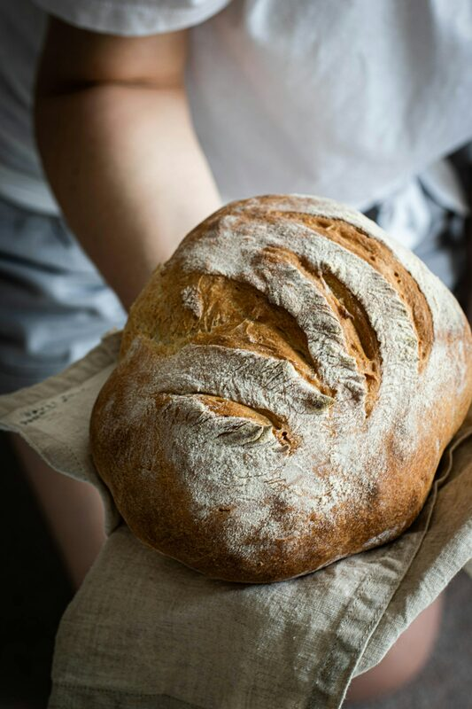
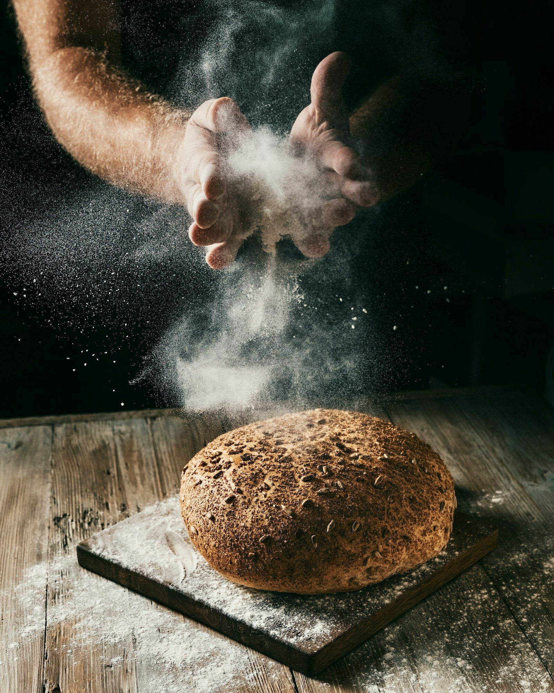
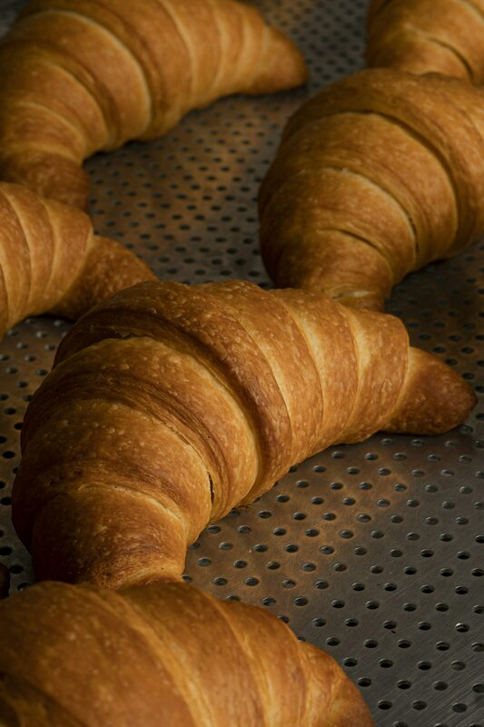
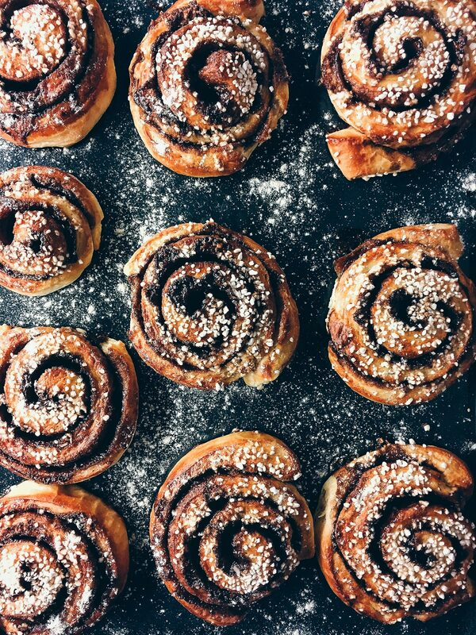
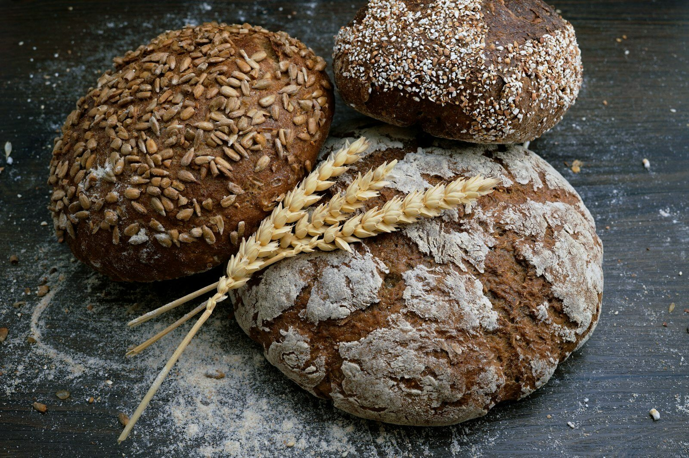
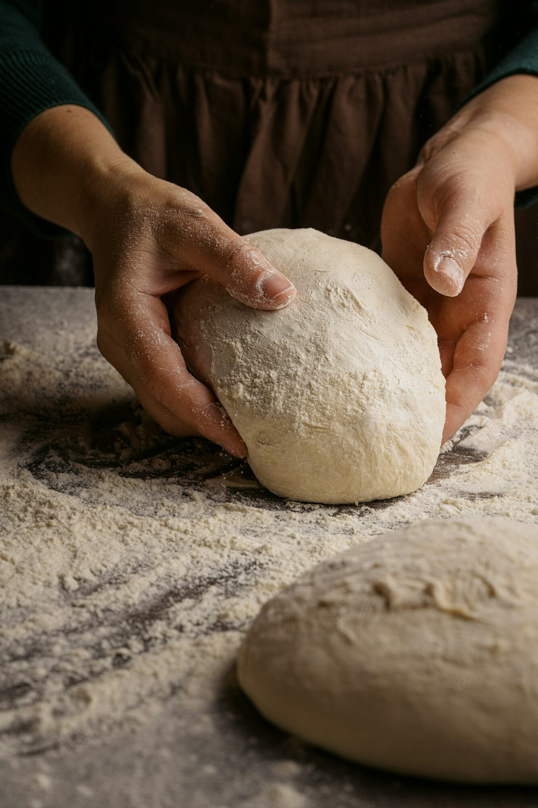

Sourdough
Fermented overnight. Sour. Crackling crust.

Today's bakes

Fermented overnight. Sour. Crackling crust.

Laminated butter. Crisp exterior.

Brown sugar spiral. Warm.

We take the time so you don't have to.
The best sourdough in the city.
Changed how I think about breakfast.

Every loaf reflects the baker's experience.